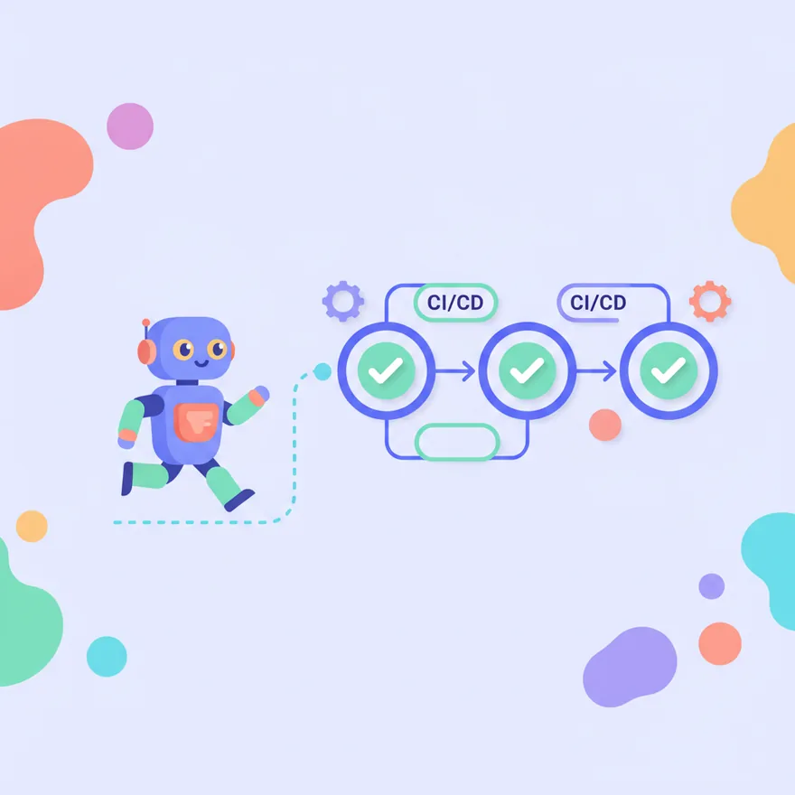

Headless Mode ใน CI/CD
Headless mode ให้ Claude Code ทำงานแบบไม่ต้องมีคนนั่งเฝ้า เหมาะกับ CI/CD เช่น auto-fix test ที่พัง, review PR อัตโนมัติ, สร้าง release notes
เมื่อเรียนจบบทนี้ คุณจะ…
- เข้าใจว่า Headless Mode คืออะไร
- บอกได้ว่า Headless Mode ช่วยงาน CI/CD อย่างไร
- รู้หลักการใช้ Headless Mode ใน GitHub Actions

Headless Mode คืออะไร? ทำไมต้องใช้?
ลองนึกภาพว่าคุณมีหุ่นยนต์อัจฉริยะ (Claude Code) ที่สามารถเขียนโค้ด แก้บั๊ก หรือแม้กระทั่งรีวิวงานให้คุณได้ แต่แทนที่คุณจะต้องนั่งเฝ้ามันทำงานตลอดเวลา Headless Mode คือการที่เราสั่งงานเจ้าหุ่นยนต์นี้แบบ 'ไม่ต้องมีหน้าจอ' หรือ 'ไม่ต้องมีคนนั่งเฝ้า' ครับ มันจะทำงานของมันเองตามคำสั่งที่เราให้ไป แล้วก็ส่งผลลัพธ์กลับมาให้เรา
ทำไมเราถึงอยากให้มันทำงานแบบนี้? ก็เพราะว่าในโลกของการพัฒนาซอฟต์แวร์ เรามีงานหลายอย่างที่ต้องทำซ้ำๆ บ่อยๆ เช่น การทดสอบโค้ด, การตรวจสอบคุณภาพโค้ด หรือการสร้างเอกสารต่างๆ ซึ่งงานเหล่านี้เหมาะมากกับการให้ระบบอัตโนมัติ (หรือที่เรียกกันว่า CI/CD) เข้ามาช่วย Headless Mode จึงเป็นกุญแจสำคัญที่ทำให้ Claude Code เข้าไปเป็นส่วนหนึ่งของระบบอัตโนมัติเหล่านี้ได้นั่นเองครับ
เริ่มต้นรัน Claude Code แบบ Headless
การจะสั่งให้ Claude Code ทำงานแบบ Headless นั้นง่ายมากครับ เราจะใช้คำสั่งพิเศษที่เรียกว่า 'flag' นั่นคือ -p ซึ่งย่อมาจาก 'print mode' หรือ 'โหมดพิมพ์' แทนที่จะเปิดหน้าจอให้เราพิมพ์โต้ตอบเหมือนปกติ เราจะส่งคำสั่งหรือ 'prompt' ของเราเข้าไปพร้อมกับ flag นี้เลย แล้ว Claude Code ก็จะประมวลผลและ 'พิมพ์' ผลลัพธ์ออกมาให้เราทันที
ลองจินตนาการว่าคุณกำลังส่งข้อความหาเพื่อนเพื่อสั่งให้เขาทำอะไรบางอย่าง พอเพื่อนทำเสร็จ เขาก็จะตอบกลับมาเป็นข้อความเช่นกัน หลักการเดียวกันเลยครับ
- เปิด Command Line หรือ Terminal ของคุณ
- พิมพ์คำสั่ง
claude -p "รัน test ถ้าพังให้แก้จนผ่าน"(สามารถเปลี่ยนข้อความในเครื่องหมายคำพูดเป็นคำสั่งที่คุณต้องการให้ Claude ทำได้) - กด Enter และรอให้ Claude ประมวลผล ผลลัพธ์จะแสดงออกมาใน Command Line
-p เป็น flag สำคัญในการสั่งงาน Claude Code แบบอัตโนมัติรับผลลัพธ์แบบมีโครงสร้างด้วย --output-format json
เมื่อเราสั่ง Claude Code ด้วย -p ผลลัพธ์ที่ได้มักจะเป็นข้อความธรรมดา แต่ในโลกของระบบอัตโนมัติ โปรแกรมอื่นๆ มักจะชอบข้อมูลที่มีโครงสร้างชัดเจน เพื่อให้ง่ายต่อการนำไปประมวลผลต่อ เหมือนเราสั่งอาหารแล้วระบุว่าขอเป็นเมนู A, B, C แยกกันชัดเจน ไม่ใช่รวมกันเป็นก้อน
เราสามารถบอกให้ Claude Code ส่งผลลัพธ์ออกมาในรูปแบบ JSON ได้ครับ JSON (JavaScript Object Notation) เป็นรูปแบบข้อมูลที่มีโครงสร้างชัดเจน เข้าใจง่ายทั้งคนและเครื่องจักร การใช้ --output-format json จะทำให้ผลลัพธ์ที่ได้เป็น JSON ซึ่งเหมาะมากกับการนำไปใช้ต่อใน script หรือโปรแกรมอื่นๆ
- เพิ่ม
--output-format jsonเข้าไปในคำสั่งclaude -p "..." - ตัวอย่าง:
claude -p "สร้าง release notes สำหรับเวอร์ชัน 1.2.3" --output-format json - ผลลัพธ์ที่ได้จะเป็นข้อมูล JSON ที่สามารถนำไป parse (แยกวิเคราะห์) ในภาษาโปรแกรมต่างๆ ได้ง่าย
Headless Mode กับโลกของ CI/CD
CI/CD ย่อมาจาก Continuous Integration และ Continuous Delivery/Deployment มันคือระบบอัตโนมัติที่ช่วยให้นักพัฒนาสามารถสร้าง, ทดสอบ, และส่งมอบซอฟต์แวร์ได้อย่างรวดเร็วและต่อเนื่อง ลองนึกถึงสายพานการผลิตในโรงงาน ที่ทุกขั้นตอนเป็นไปโดยอัตโนมัติและราบรื่น
Headless Mode ของ Claude Code คือพระเอกในสถานการณ์นี้เลยครับ เพราะมันสามารถทำงานร่วมกับระบบ CI/CD ได้อย่างลงตัว เช่น:
1. **Auto-fix test ที่พัง:** เมื่อโค้ดใหม่ทำให้ Test ล้มเหลว Claude Code สามารถถูกเรียกให้มาวิเคราะห์และเสนอแนวทางแก้ไข หรือแม้กระทั่งแก้โค้ดให้ผ่าน Test ได้อัตโนมัติ
2. **Review PR อัตโนมัติ:** เมื่อมีคนส่ง Pull Request (PR) เพื่อรวมโค้ดเข้าสู่โปรเจกต์ Claude Code สามารถช่วยรีวิวโค้ด ค้นหาข้อผิดพลาด หรือเสนอแนะการปรับปรุงได้ทันที
3. **สร้าง Release Notes:** เมื่อถึงเวลาปล่อยเวอร์ชันใหม่ Claude Code สามารถสรุปการเปลี่ยนแปลงที่เกิดขึ้นและสร้าง Release Notes ให้โดยอัตโนมัติ
การยืนยันตัวตนด้วย API Key อย่างปลอดภัย
เมื่อ Claude Code ทำงานแบบ Headless มันไม่ได้ใช้การล็อกอินด้วยชื่อผู้ใช้และรหัสผ่านเหมือนที่เราใช้งานทั่วไปครับ แต่จะใช้สิ่งที่เรียกว่า 'API Key' แทน ลองนึกภาพ API Key เหมือนกุญแจพิเศษที่มอบสิทธิ์ให้หุ่นยนต์ของเราสามารถเข้าถึงและใช้งานบริการของ Claude Code ได้โดยไม่ต้องมีคนมานั่งล็อกอิน
สิ่งสำคัญที่สุดคือเรื่องความปลอดภัยครับ API Key เปรียบเสมือนรหัสผ่านของเราเลย เราต้องเก็บมันไว้เป็นความลับสุดยอด และที่สำคัญ ควรจำกัดสิทธิ์ (permission) ของ API Key นั้นให้แคบที่สุด เท่าที่จำเป็นสำหรับงานนั้นๆ เท่านั้น เช่น ถ้า Claude Code มีหน้าที่แค่รีวิวโค้ด ก็ไม่ควรให้สิทธิ์มันไปลบข้อมูลสำคัญได้ เพื่อป้องกันความเสียหายหาก API Key รั่วไหลครับ
- สร้าง API Key จากหน้าจัดการบัญชีผู้ใช้ของคุณในระบบของ Claude Code (ขั้นตอนอาจแตกต่างกันไปตามแพลตฟอร์ม)
- ตั้งค่า API Key นั้นในสภาพแวดล้อมของระบบ CI/CD ของคุณ เช่น ใน GitHub Actions เราจะเก็บไว้ใน 'Secrets' เพื่อให้ปลอดภัยและไม่เปิดเผยในโค้ด
- เมื่อเรียกใช้ Claude Code ใน script หรือ workflow ให้ส่ง API Key เข้าไปเป็นตัวแปรสภาพแวดล้อม (environment variable) เพื่อยืนยันตัวตน
ตัวอย่าง: ให้ Claude Code ช่วย Review PR ใน GitHub Actions
GitHub Actions คือระบบอัตโนมัติที่ทำงานอยู่บน GitHub ครับ มันช่วยให้เราสามารถสร้าง 'workflow' หรือชุดคำสั่งอัตโนมัติที่ทำงานเมื่อเกิดเหตุการณ์บางอย่างขึ้น เช่น เมื่อมีคนสร้าง Pull Request (PR) ใหม่ หรือเมื่อมีการ push โค้ดเข้าสู่ repository
เราสามารถใช้ Headless Mode ของ Claude Code ร่วมกับ GitHub Actions เพื่อให้ Claude Code ช่วยรีวิว PRs ได้โดยอัตโนมัติครับ เมื่อมี PR ใหม่เกิดขึ้น Claude Code จะถูกเรียกให้มาอ่านโค้ดใน PR นั้น วิเคราะห์ และเสนอแนะการปรับปรุง หรือแจ้งข้อผิดพลาด จากนั้นผลลัพธ์ก็จะถูกโพสต์เป็น comment ลงใน PR นั้นเลย ทำให้กระบวนการรีวิวโค้ดรวดเร็วขึ้นมาก
คุณสามารถลองใช้ Prompt ที่ระบบของ Claude Code เตรียมไว้เพื่อช่วยสร้าง GitHub Actions workflow ที่ใช้ Claude Code review ทุก PR อัตโนมัติ แล้ว comment ผล review ลงใน PR ได้เลยครับ
- สร้างไฟล์ workflow ใหม่ในโปรเจกต์ของคุณ เช่น
.github/workflows/claude-pr-review.yml - เขียนโค้ด YAML สำหรับ GitHub Actions โดยกำหนดให้ workflow นี้ทำงานเมื่อมี Pull Request
- ในขั้นตอน (step) หนึ่งของ workflow ให้เพิ่มคำสั่งที่เรียกใช้ Claude Code ด้วย
claude -p "..." --output-format jsonและส่ง API Key ผ่าน Secrets ที่ตั้งค่าไว้ - กำหนดให้ผลลัพธ์จาก Claude Code ถูกนำไปสร้างเป็น comment ใน Pull Request นั้น
- -p = print/headless mode
- เหมาะ CI/CD: auto-fix, review, release notes
- ใช้ API key + permission แคบ